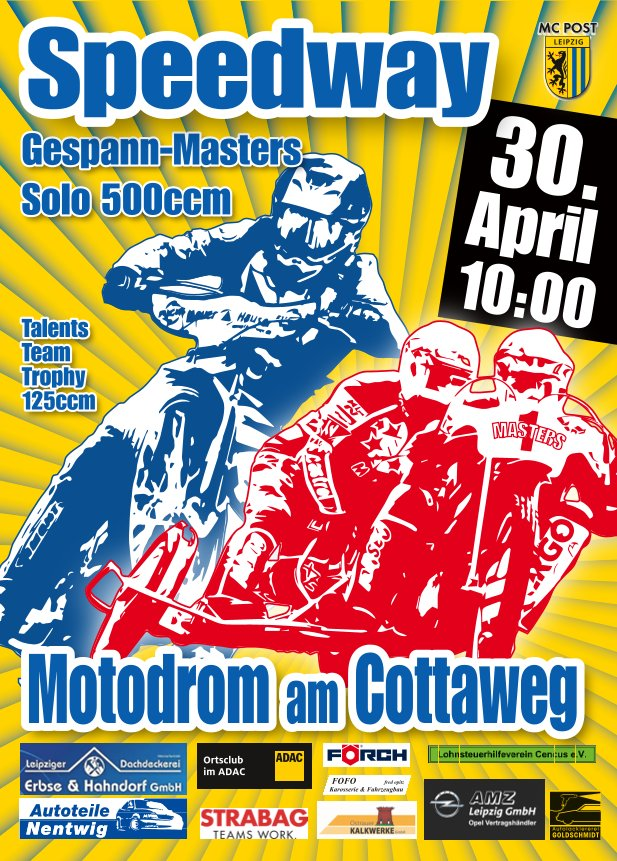
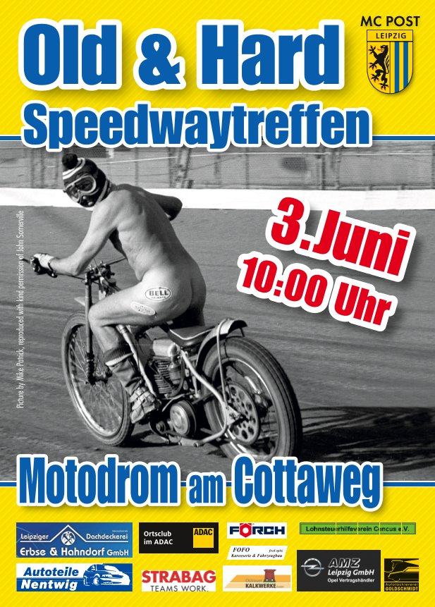
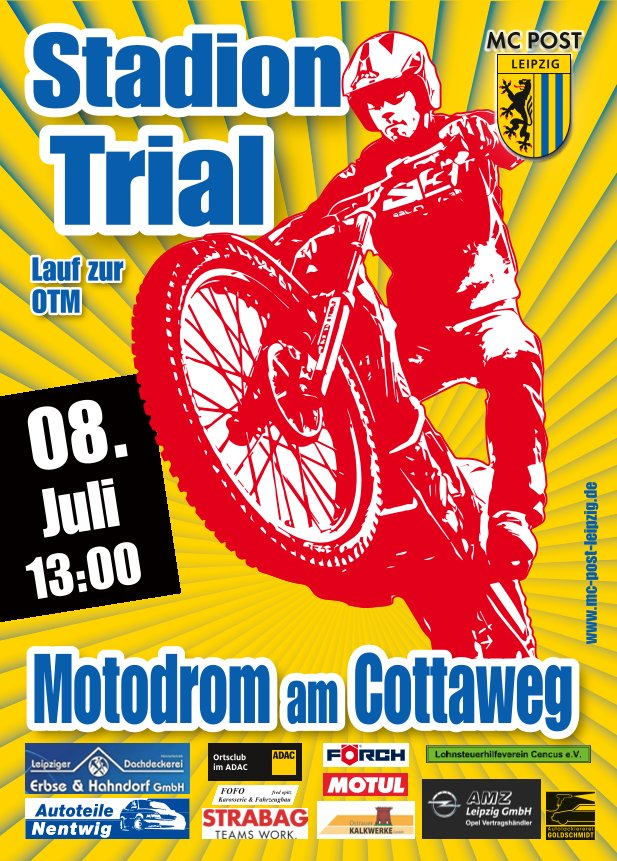
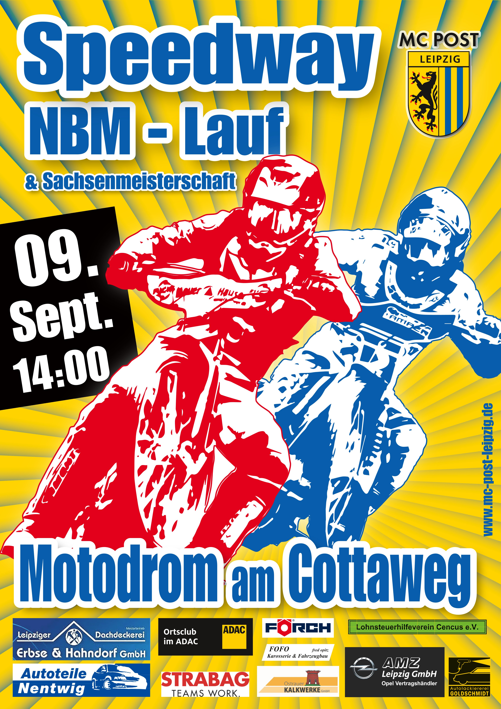
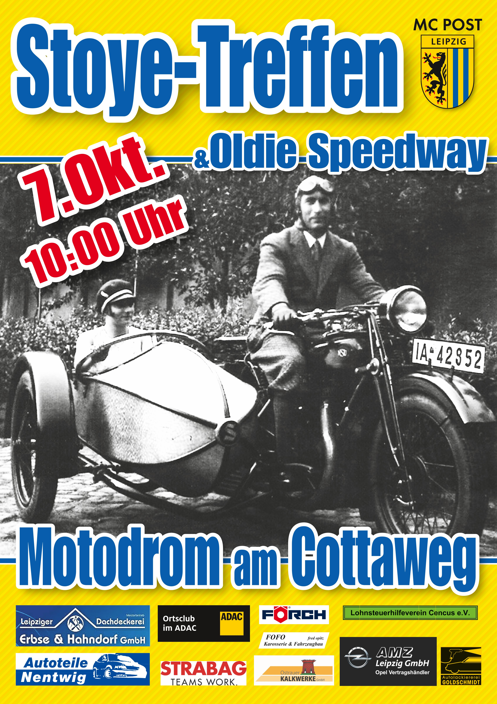

Unsere Termine für das Jahr 2023 stehen fest! 🍾🍾🍾
Alles auf einen Blick
 Alle Termine des MC Post Leipzig im Jahr 2023 auf einen Blick
Alle Termine des MC Post Leipzig im Jahr 2023 auf einen Blick30.04.2023: Speedway Sunday
Talents Team Trophy 125 ccm, Gespann Masters, Solo 500 ccm03.06.2023: Old & Hard Speedwaytreffen
Old & Hard Internationales Speedwaytreffen am 3. Juni um 10 Uhr im Motodrom08.07.2023: Stadiontrial
Lauf zur Ostdeutschen Trialmeisterschaft am 8. Juli ab 13 Uhr09.09.2023: Norddeutsche Bahnmeisterschaft
Norddeutsche Bahnmeisterschaft und Lauf zur Sachsenmeisterschaft am 9. September ab 14 Uhr07.10.2023: STOYE Seitenwagentreffen
STOYE Seitenwagentreffen und Speedway Oldtimer-Treffen am 7. Oktober ab 10 Uhr